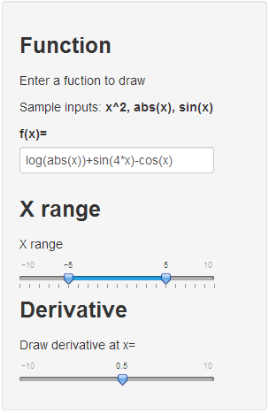

This web application allows you to
Input a single-variable function (e.g. f(x)= x2+sin(x)+3)
View the graph of the function
Select a value for x, and view the derivative line of f(x) for that point
Sounds interesting? read on...
Lior Kogan
Coursera student
This web application allows you to
Input a single-variable function (e.g. f(x)= x2+sin(x)+3)
View the graph of the function
Select a value for x, and view the derivative line of f(x) for that point
Sounds interesting? read on...

In this panel, the user can:
Input the function he wants to draw.
This should be a single-variable (x) function.
The function is evaluated directly by R.
Select the X-range of the graph to be drawn
Select the value of x for which a derivative-line should be drawn
Plot of f(x) = log(abs(x))+sin(4*x)-cos(x) for x between -5 and 5:
The derivative of f(x) at (0.5, -0.661) is 0.815